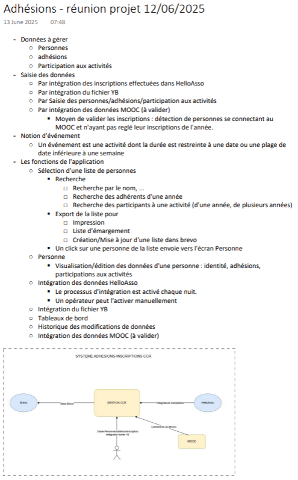
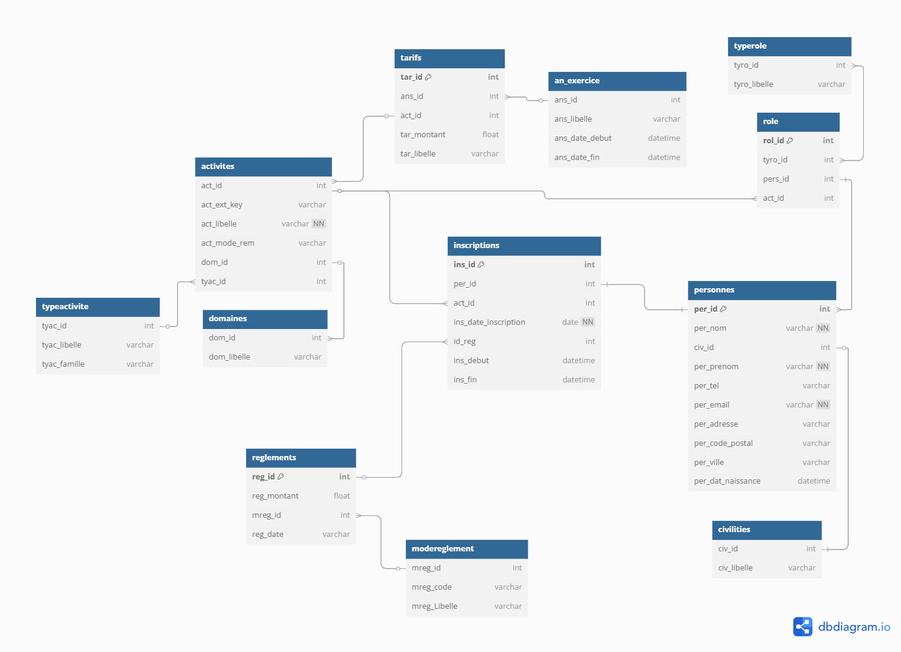

Présentation du Cercle Celtique de Rennes
Le Cercle Celtique de Rennes est une association de loi 1901 située à Rennes, dont la mission est de valoriser et transmettre le matrimoine et patrimoine culturel immatériel de Bretagne. À travers ses projets variés, elle favorise les rencontres artistiques et culturelles. Par ses actions d’animation et de médiation culturelle dans les quartiers, sur le territoire et au sein des écoles, elle occupe une place importante dans le paysage culturel rennais.
Le Cercle Celtique de Rennes propose une large palette d’activités et d'ateliers, en pratique individuelle ou collective, allant de la danse traditionnelle bretonne à la musique, en passant par le chant, la broderie, les langues bretonne et gallèse. La vie associative génère de nombreux projets en interne comme en externe tels que le festival Sevenadur et des ateliers de découverte culturelle, reflétant ainsi la richesse et la diversité du patrimoine breton.
Missions accomplies
Liste des différentes missions
J'ai documenté plusieurs petites missions que j'ai dû faire et j'ai aussi fait un compte rendu hebdomadaire, que vous retrouverez ci-dessous.
Documentations techniques & comptes rendusSuite aux services que j'ai déployés ou développés, j'ai produit plusieurs documentations utilisateur. Vous les retrouverez ci-dessous.
Guides utilisateursJ'ai aussi été amené à créer une charte informatique car ils n'en avaient pas ; vous la retrouverez ci-dessous.
Charte informatiqueSur demande de l'association, j'ai créé une application web qui utilise l'API de Brevo afin d'ajouter des contacts qui sont présents dans un tableur. Ce tableur a des colonnes dont les noms ne changent pas, ce qui m'a permis de faire un code qui ne fonctionne qu'avec ce tableur spécifiquement. Cependant, ce projet n'a pas été publié car un nouveau projet a vu le jour juste après, et donc ils n'ont plus eu besoin de mon application web.
Ci-dessous, vous retrouverez le dépôt GitHub associé à ce projet.
Dépôt Brevo sur GitHubCe projet est un projet qui répond à une réelle demande des salariés du cercle
celtique, ils n'avaient pas de logiciel de gestion des adhérents.
Dominique, qui s'occupe du développement informatique du cercle celtique de Rennes,
avait déjà pensé auparavant à développer une application web de gestion des
adhérents.
Cependant, il ne souhaitait pas trop s'avancer, il a donc attendu que la demande
vienne réellement.
Une fois que la demande nous est parvenue il y a eu plusieurs réunion avec les
salariés afins d'établir les besoins, de créer la base de données, de répondre a
nos questions...
On m'a donc demander de faire un premier visuel a présenté lors de notre toute
première réunion.
Voici le premier visuel :
Voici un compte rendu effectuer par Dominique à la suite d'une des réunions que nous avons eu :
Ce compte rendu définie donc les attentes principals des salariés, ce qui a suivit a été la conception de la base de donnée, voici donc un schéma de la base de données qui a été créer a la suite des différentes réunions.
On m'a proposer de travailler sur deux fonctionnalité différentes, la recherche d'adhérents ou l'intégration de fichier CSV. J'ai donc choisit de travaillé sur l'integration CSV, où j'ai été chargé de mettre en place les fonctions d'implémentation du contenu dans la base de données, ainsi que de sa vérification.
Voici une présentation du site ainsi que de ce que j'ai pu coder.
Ci-dessous, vous retrouverez l'ensemble du dépôt GitHub associé à ce projet, ce dernier a continuer a évoluer après mon départ pour voir sa V1 sortir, d'autres versions sont à prévoirs.
Quand je suis arrivé dans cette association, j'ai vu le matériel informatique utilisé ainsi que les sécurités qui étaient mises en place. J'ai tout de suite pensé à faire une petite formation aux salariés sur l'importance de la cybersécurité.
Pendant mon stage, ils ont été piratés. Le pirate a usurpé leur identité pour récupérer le montant d'une facture en changeant le RIB sur cette dernière. Le cercle celtique s'est rendu compte qu'ils avaient été piratés car le président était en copie des mails. Le pirate a bien été retrouvé.
Retrouvez ci-dessous le support que j'ai utilisé pour former les salariés du Cercle Celtique de Rennes
Support de formation utiliséÀ mon arrivée, on m'a demandé de trouver comment avoir accès à leur serveur de sauvegarde, un NAS de Synology.
On m'a expliqué que depuis le départ de l'ancien stagiaire qui l'avait mis en place, ils n'avaient plus accès au NAS au bout de 2 semaines, et ne savaient pas si la sauvegarde était toujours en marche.
J'ai donc réussi à me connecter grâce au guide laissé par l'ancien stagiaire et je leur ai remis le service en marche. J'ai ensuite repris la documentation du stagiaire.
On m'a aussi demandé de faire un comparatif entre leur serveur cloud et le serveur NAS dans l'optique d'inverser les fonctions des deux serveurs.
Vous retrouverez la documentation ci-dessous.
Documentation liéeListe des Compétences exploitées durant ce Stage
Retrouvez ci-dessous une présentation exhaustive des compétences que j'ai eu l'occasion de mettre en pratique et d'approfondir durant ce stage, classées par blocs thématiques conformément au référentiel. Elles témoignent de ma capacité à maîtriser divers aspects de l'informatique et du développement.
Bloc 1 - Support et mise à disposition des services informatiques
| Libellé de la Compétence | Intitulé de la Compétence | Missions associées |
|---|---|---|
| B1.1.1 | Recenser et identifier les ressources numériques | Mission 4 |
| B1.1.3 | Exploiter des référentiels, normes et standards adoptés par le prestataire informatique | Mission 3 |
| B1.1.4 | Gérer des sauvegardes | Mission 5 |
| B1.1.5 | Vérifier les conditions de la continuité d’un service informatique | Mission 2 Mission 3 |
| B1.1.6 | Vérifier le respect des règles d’utilisation des ressources numériques | Mission 1 Mission 4 |
| B1.2 | Répondre aux incidents et aux demandes d’assistance et d’évolution | Mission 1 Mission 2 Mission 3 Mission 5 |
| B1.4 | Travailler en mode projet | Mission 3 |
| B1.5 | Mettre à disposition des utilisateurs un service informatique (orienté utilisateurs) | Mission 2 Mission 3 |
| B1.6 | Organiser son développement professionnel | Mission 1 Mission 2 Mission 3 Mission 4 Mission 5 |
Bloc 2 - SLAM Conception et développement d’applications
| Libellé de la Compétence | Intitulé de la Compétence | Missions associées |
|---|---|---|
| B2.1.1 | Analyser un besoin exprimé et son contexte juridique | Mission 1 |
| B2.1.2 | Modéliser une solution applicative | Mission 2 Mission 3 |
| B2.1.3 | Participer à la conception de l’architecture d’une solution applicative | Mission 3 |
| B2.1.7 | Utiliser des composants d’accès aux données | Mission 3 |
| B2.1.8 | Exploiter les fonctionnalités d’un environnement de développement et de tests | Mission 2 Mission 3 |
| B2.1.9 | Réaliser des tests nécessaires à la validation ou à la mise en production d’éléments adaptés ou développés | Mission 2 |
| B2.1.11 | Évaluer la qualité d’une solution applicative | Mission 2 |
| B2.1.12 | Rédiger des documentations techniques et d’utilisation d’une solution applicative | Mission 1 |
| B2.3 | Gérer les données | Mission 3 |
Bloc 3 - Cybersécurité des services informatiques
| Libellé de la Compétence | Intitulé de la Compétence | Missions associées |
|---|---|---|
| B3.1 | Protéger les données à caractère personnel | Mission 3 Mission 4 |
| B3.3.1 | Informer les utilisateurs sur les risques associés à l’utilisation d’une ressource numérique et promouvoir les bons usages à adopter | Mission 4 |
| B3.5B.1 | Participer à la vérification des éléments contribuant à la qualité d’un développement informatique | Mission 2 Mission 3 |
| B3.5B.2 | Prendre en compte la sécurité dans un projet de développement d’une solution applicative | Mission 3 |
| B3.5B.4 | Prévenir les attaques | Mission 4 |